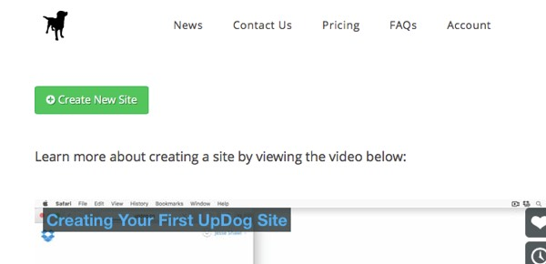
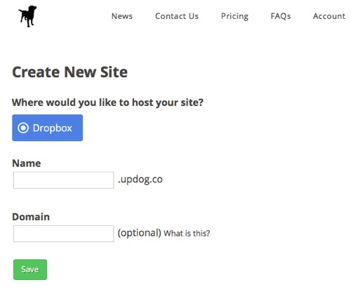
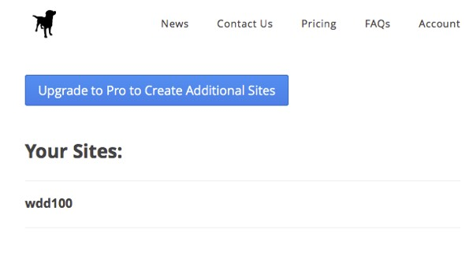

Week 01: Setup Software Used In Course
Activity Instructions
One of our goals for this class is to allow you to create a real website accessible with a browser. This, as you will discover in the readings and videos for this week, requires you to have what is known as a host. Most hosts cost money, but not all. For this class, we will be using a free service called Updog as our host. You can then use one of several good text editors to write your actual HTML code. I recommend one called Brackets id you don't already have another that you like.
There are a few steps we will need to go through to get everything set up.
Step 01
Updog uses Dropbox for the file storage. If you already have a Dropbox account, and their desktop program setup on your computer and know how to use it, skip to the next step. If you do not then follow the instructions on setting up Dropbox, then come back.Step 02
Goto updog.co and sign in with your Dropbox credentials. Updog will need to create a folder inside your Dropbox folder called "Updog" and will ask for permission to do this. After granting it permission it will take you to a getting started screen.

Step 03
Next we need to create a domain for you to use. Click on the "Create New Site" button on the top left side of the screen. Enter whatever you want to use for your domain. This does need to be unique, and will only allow letter and numbers. I usually recommend something like "semesterLastnameFirstinitial". So for me it would be "w17thompsond" (if it were Winter 2017). Leave the second box empty.

Updog Create Domain
This will form the URL you will turn in for most of your assignments over the course. The URL will be your site(folder) name + updog.co. So for my example my URL would be: https://w17thompsond.updog.co You can always find it if you login to Updog and click on the Site name if you forget it.

When you created your domain in Updog it automatically created a folder on your computer where you need to place all of your files for you webpages. In my case the folder is: DropBox/Apps/Updog/w17thompsond. If you place your files anywhere else your instructor will not be able to see them to give you a grade!
Attention!
If you don't see an Apps/Updog folder in your Dropbox then something went wrong. Try removing the Site you just created and try again.
Choose an editor. Brackets, TextWrangler, and Notepad++ are 3 good text editors to choose from. The other listed software are planning tools that may be used later in the course.
Here is the complete list of software we will use this semester: ( * means will or most likely used )
- Brackets (Mac and Windows) Text Editor made specifically for working with HTML and CSS.
- TextWrangler (Mac) Good general purpose text editor for the Mac.
- Notepad++ (Windows) Good general purpose text editor for the PC.
- Wireframe.cc Lightweight online tool for creating wireframes.
- Cacoo.com A lgithweight online tool for creating wireframes.
- wireframe.cc An online wireframing tool wit a good feature set.
- Moqups Another potential wireframe planning choice. They also have a free educational account available. Obtain by sending an email and requesting with your byui.edu school email account.
- InVision/education-signup Prototyping Planning Tool...To get a free educational code, you must signup using your school email... signup code is 56-73-13-19 ... educational account is valid until 6 months past graduation.